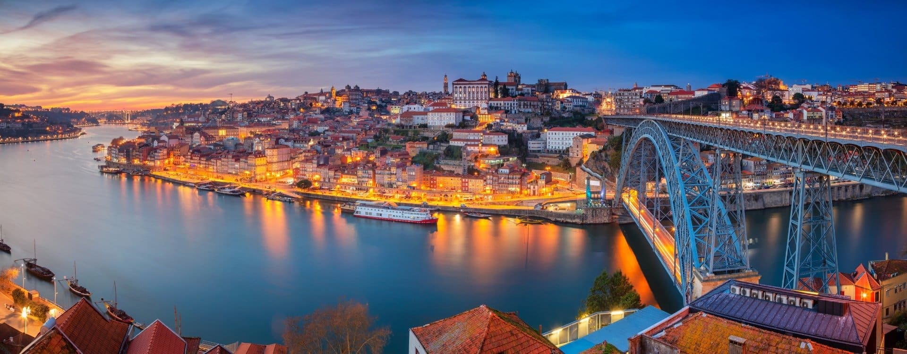

Lissabon är Portugals huvudstad och ligger vid floden Tejo nära Atlanten. Staden är känd för sina kullar, sitt milda klimat och sin långa historia. I Lissabon finns många populära turistställen, till exempel den gamla stadsdelen Alfama med sina smala gator och traditionell musik. Besökare kan också åka de berömda gula spårvagnarna och njuta av utsikten från olika utsiktsplatser. Kombinationen av kultur, historia och vackra vyer gör Lissabon till ett attraktivt resmål.
Porto

Porto är en av Portugals största städer och ligger vid floden Douro i norra delen av landet. Staden är känd för sin historia, sina färgglada hus och det berömda portvinet. I Porto finns flera populära turistställen, till exempel den gamla stadsdelen Ribeira som är med på UNESCO:s världsarvslista. Besökare kan också gå över bron Dom Luís I och besöka vinkällare längs floden. Kombinationen av kultur, historia och vacker utsikt gör Porto till ett populärt resmål.